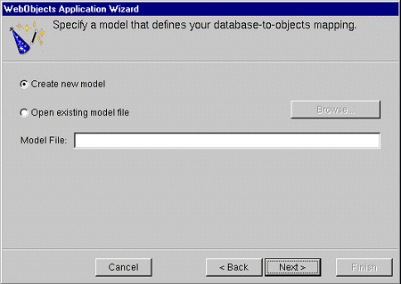
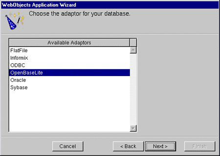
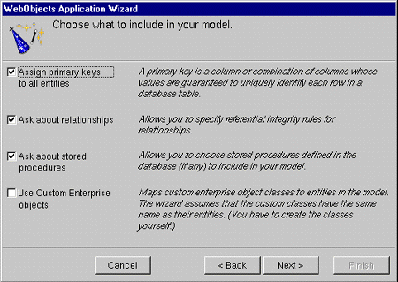
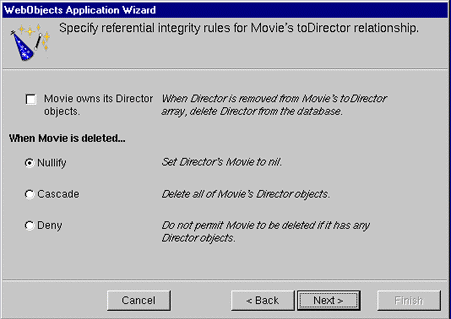
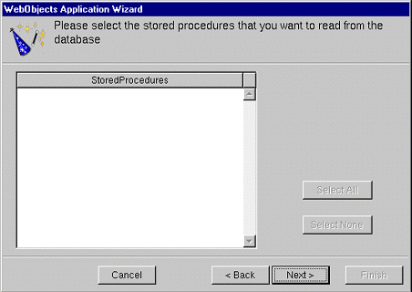
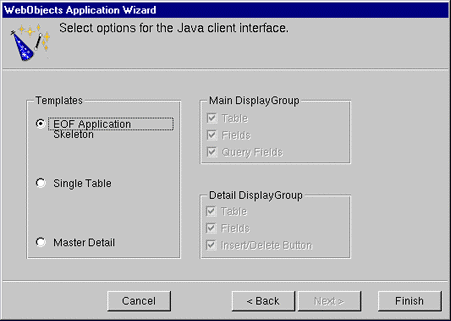

Creating a Java Client WebObjects Application
After you create a new project of the type "WebObjectsApplication" the WebObjects Application Wizard displays a succession of screens. The sequence of screens that you see depends on the options you select. The following sequence shows those screens that are displayed when you request a Java Client application that includes a newly created model and uses a EOF "skeletal" application template.
For this tutorial, click "Create new model" and then click Next.
If you already have a model file, you can select "Open existing model file" and type the file system path to that file in the Model File field; or you can also click Browse and navigate to the file using a browser. This tutorial, however, invites you to follow a sequence of wizard screens that deal with creating a model file. If you chose an existing model file, go to Selecting the Application Template .
You can find a Movies model file (Movies.eomodeld ) in NEXT_ROOT /Developer/Examples/EnterpriseObject/AppKit/Movies .
If you decide to create a model for your application, the wizard steps you through a succession of windows. The model file, when created, is given the name of your project, in this case StudioManager.eomodeld .
Select an adaptor for the database you want to use.An adaptor is a mechanism that connects your application to a particular database server. For each type of server you use, you need a separate adaptor. WebObjects provides adaptors for several relational database servers, such as OpenBase Lite, Informix, Oracle, and Sybase servers as well as the source code for a flat-file database adaptor. If you're working on a Windows platform, WebObjects also provides an ODBC adaptor for use with ODBC-compliant database sources. It also provides the source code from which you can build an adaptor for a flat-file database.
All adaptors expect you to specify the database to use. In addition, before you can gain access to the database, you must log in. Different databases require different login information, so each database's login panel looks different. This tutorial uses the single-user OpenBase Lite adaptor for of the Movies database that is pre-installed with Enterprise Objects Framework.
After you log in, the wizard uses the selected adaptor to read the data dictionary (that is, schema information) from the database. From this dictionary it creates a default model, but before it does it lets you configure that model in four different ways.
Make sure every option is checked except "Use Custom Enterprise objects".
The basic model the wizard creates contains entities, attributes, and relationships. How complete this model is depends on how completely the schema information is inside your database server. For example, the wizard includes relationships in your model only if the server's schema information specifies foreign key definitions.
Using the options in this page, you can supplement the basic model with additional information. (Note that the wizard doesn't modify the underlying database.) The following sections describe each option:
Enterprise Objects Framework uses primary keys as unique identifiers of enterprise objects with which it maps these objects to the appropriate database row. Therefore, you must assign a primary key to each entity you use in your application. The wizard automatically assigns primary keys to the model if it finds primary-key information in the database's schema information. Checking this box causes the wizard later on to prompt you to choose primary keys if they aren't defined in the database's schema information.
If there are foreign-key definitions in the database's schema information, the wizard includes the corresponding relationships in the basic model. However, a definition in the schema information might not provide enough information for the wizard to set all of a relationship's options. Checking this box causes the wizard to prompt later you to provide the additional information it needs to complete the relationship configurations.
Checking this box causes the wizard to read stored procedures from the database's schema information, display them, and allow you to choose which to include in your model.
An entity maps a table to enterprise objects by storing the name of a database table (MOVIE, for example) and the name of the corresponding enterprise object class (a Java class such as Movie). When deciding what class to associate with an entity, you have two choices: EOGenericRecord or a custom class. EOGenericRecord is a class whose instances store as key-value pairs an entity's properties and the data associated with each property. They do nothing else.
If you don't check the "Use custom enterprise objects" box, the wizard maps all your database tables to EOGenericRecord. If you do check this box, the wizard maps all your database tables to custom classes. The wizard assumes that each entity is to be represented by a custom class with the same name. For example, a table named MOVIE has an entity named Movie, whose corresponding custom class is also named Movie.
Use a custom enterprise object class only when you need to add business logic; otherwise use EOGenericRecord. Note that this option, if selected, only assigns a class name; it does not create a class. The class of an entity remains EOGenericRecord, even if EOModeler shows a different class name, until you create the "skeletal" class file and add this file to the project. You'll perform this step later using EOModeler.
Select the following tables: DIRECTOR, MOVIE, MOVIE_ROLE, PLOT_SUMMARY, REVIEW, STUDIO, TALENT, TALENT_PHOTO, and VOTING.
See the table below.
8. Specify referential integrity rules for the relationships in the model.
Select the Nullify button in each "referential integrity" window that appears.
If you're using a database that stores foreign key definitions in its database server's schema information, the wizard reads them and creates corresponding relationships in your model. (The naming convention for relationships varies according to the adaptor you're using.) The wizard now asks you to specify referential integrity rules for the relationships so it can further configure them.
This option specifies that a destination object in a relationship can't exist without its source object; the source object is said to "own" the destination object or objects in the relationship. For example, consider the case of Movie's to-many relationship to MovieRoles, which it owns. When a MovieRole is removed from its Movie's array of MovieRoles, the MovieRole is deleted--deleted in memory and deleted in the database.
This set of options specifies what to do when the source object in a relationship is deleted.
This panel lists the stored procedures defined in your database, with all procedures selected by default.
Selecting the Application Template
After you create a model or choose an existing one, the wizard displays a final screen that lets you select the type of template to use for your project.
10. Select the template project to use for the Java Client application.Make sure the EOF Application Skeleton radio button is selected.
The EOF Application Skeleton creates an application project with a "blank" user interface; you must construct the interface by hand in Interface Builder. For StudioManager, this is the option you want. The other two options automatically generate different types of interfaces:
For more on the last two options, see "Creating a WebObjects Database Application" in Getting Started With WebObjects .
© 1999 Apple Computer, Inc.